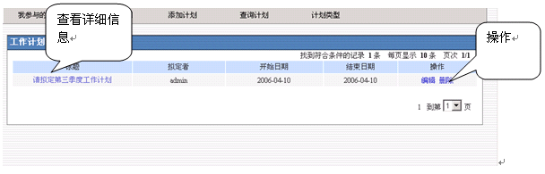
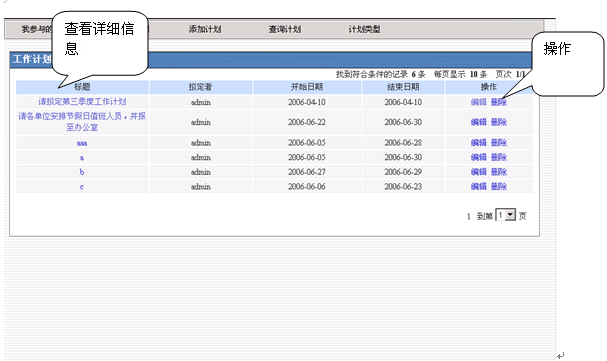
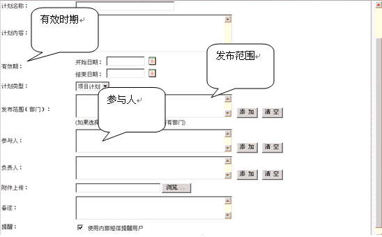
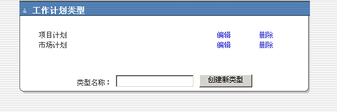

工作计划 |
| “工作计划”分为“我参与的计划”、“我拟定的计划”、“添加计划”、“查询计划”和“计划类型”三部分。 |
| 1.“我参与的计划”显示本人参与的计划详细信息。以及修改、删除操作。 |
 |
2.“我拟定的计划”由本人拟定的计划。 |
|  |
| 3.“添加计划”模块主要为部门和单位负责人制定，拥有该模块应用权限的用户可新建和管理自己管辖范围内的工作计划。工作计划的发布范围可指定多个部门，提交后发布人仍可修改工作计划内容。 |
|  |
| 4. “工作计划类型设置”可添加计划类型，如下图所示： |
|  |